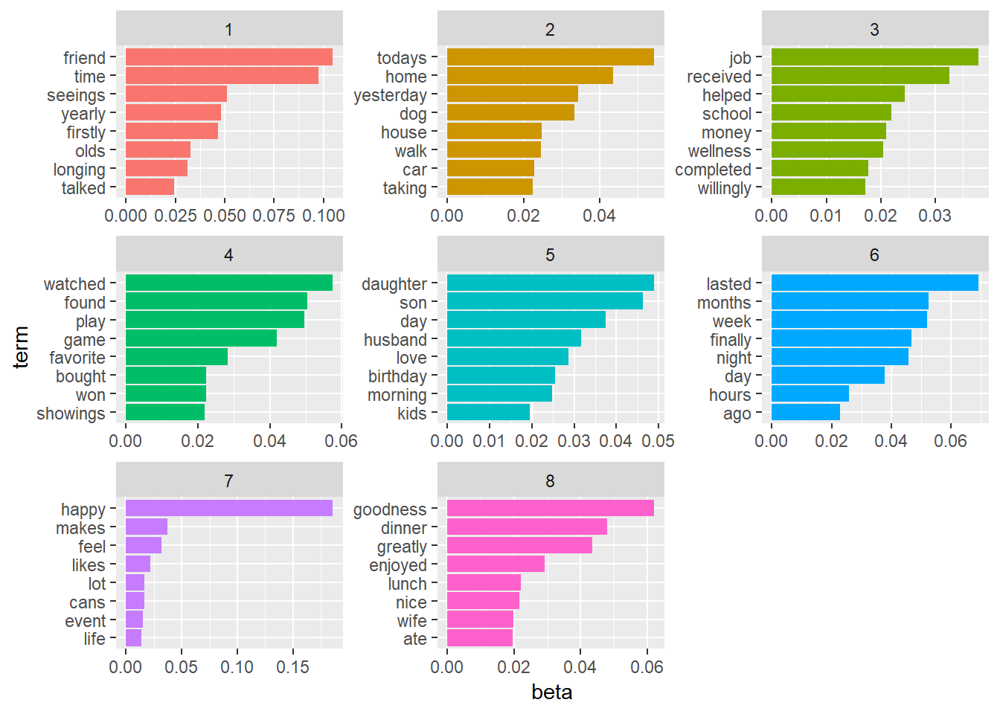
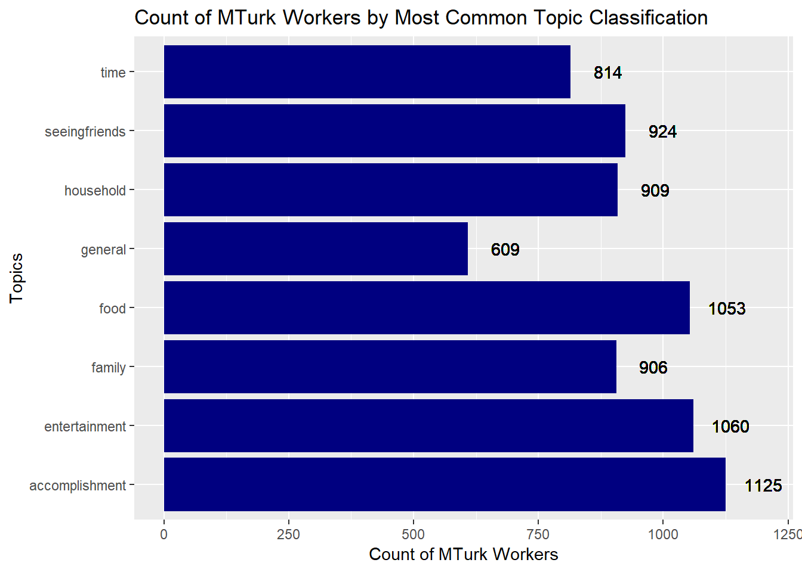
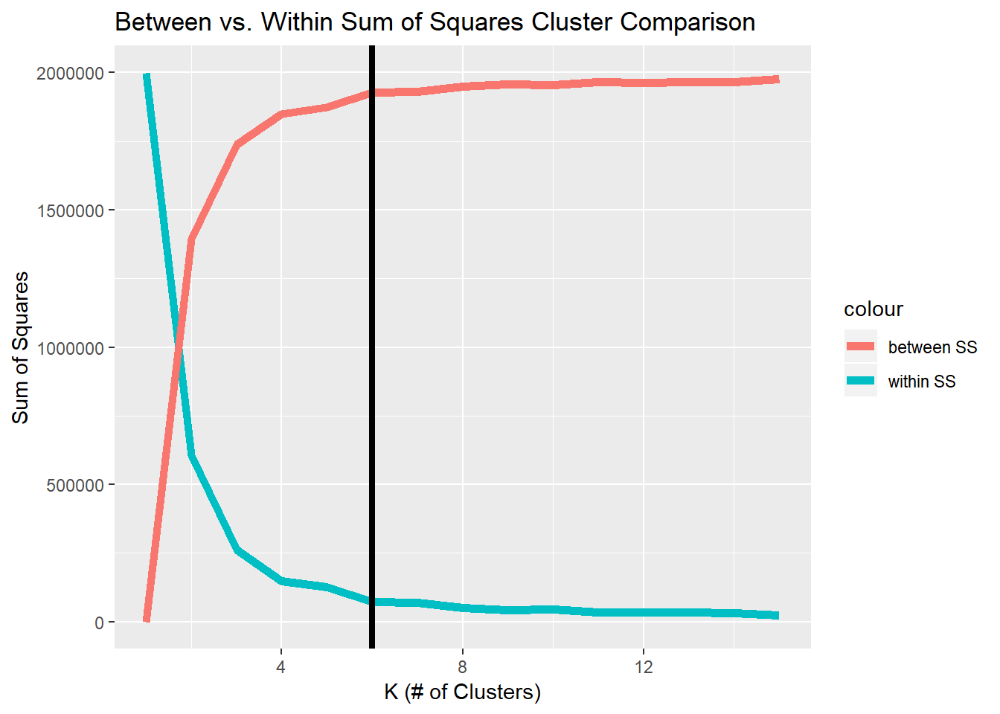

This project poses a question from the perspective of an advertising agency looking to become more accurate in targeting positive messages to Facebook users. The agency would like to know: “How are positive events and emotions communicated in short form? Are the topics and key points different across various demographics?” The agency will use this information to better serve its advertising clients seeking to attract customers on Facebook. By collecting data on statuses posted by different demographics, the agency hopes to classify these users and communicate relevant ads onto their Facebook page.
This project will leverage the Happy Moments data, which collects 100,000+ responses via Amazon’s Mechanical Turk to the question: “What made you happy today? Reflect on the past {24 hours|3 months}, and recall three actual events that happened to you that made you happy. Write down your happy moment in a complete sentence. Write three such moments.”
This project will normalize these happy moments for more consumable analysis, then implement a topic modeling algorithm to categorize these moments into different topics of conversation. Finally, this project will cluster the MTurk workers based on their most frequent topic of conversation in conjunction with relevant demographic attributes to provide the advertising agency with segment profiles of people that may post happy moment status on Facebook in the future.
This project and analysis was developed with the following version of R:
print(R.version)## _
## platform x86_64-w64-mingw32
## arch x86_64
## os mingw32
## system x86_64, mingw32
## status
## major 3
## minor 5.2
## year 2018
## month 12
## day 20
## svn rev 75870
## language R
## version.string R version 3.5.2 (2018-12-20)
## nickname Eggshell IglooStep #01: Load the libraries to run the following analysis:
library(dplyr)
library(ggplot2)
library(tm)
library(tidyr)
library(proxy)
library(topicmodels)
library(sqldf)
library(matrixStats)
library(ldatuning)
library(tidytext)
library(stringr)
library(tibble)
library(formattable)
library(purrr)Step #02: Load the data sources from Happy Moments data source:
cleaned_hm <- read.csv('https://raw.githubusercontent.com/rit-public/HappyDB/master/happydb/data/cleaned_hm.csv')
demographic <- read.csv('https://raw.githubusercontent.com/rit-public/HappyDB/master/happydb/data/demographic.csv')Step #03: Create the master file under the following assumptions: 1. Only include US moments as scope of agency’s clients are based in the United States. 2. Limit the age range to 18-85. Amazon Turk users must be 18 or older to participate, and elders over 85 years old are not the target demographic of the agency. 3. Only include users identifying as male or female to simplify clustering analyses. Transformed binary for numerical analyses. 4. Only include users with parenthood attribute = yes or no. Transformed binary for numerical analyses. 5. Transformed marital status attribute to single or not single for targeted clustering analysis. Transformed binary for numerical analyses.
#create HMDB central table with appropriate filters and consolidations#
hmdb <- cleaned_hm %>%
inner_join(demographic, by = 'wid') %>%
filter(country == 'USA') %>%
mutate(age = as.numeric(age)) %>%
filter(age >= 18 & age <= 85) %>%
filter(gender %in% c("m", "f")) %>%
mutate(gender = (gender == 'f')*1) %>%
filter(parenthood %in% c("n", "y")) %>%
mutate(parenthood = (parenthood == 'y')*1) %>%
mutate(marital = (marital == 'single')*1) %>%
mutate(id = row_number())Step #04: Pre-process the happy moments so that they are better prepared for analysis. This includes removing extra spaces, numbers, stop words (as called by the tm library), and all punctuation.
#create and process a corpus of all moments in scope#
corpus <- VCorpus(VectorSource(tolower(hmdb$cleaned_hm))) %>%
tm_map(removePunctuation )%>%
tm_map(removeNumbers) %>%
tm_map(stripWhitespace) %>%
tm_map(removeWords, stopwords('english'))
#stem words within each moment to obtain the core word for lookup#
stem_hmid <- tidy(tm_map(corpus, stemDocument)) %>%
select(text)
#create master list of words in the corpus - this serves as the dictionary reference document to compare the stemmed words against#
stem_words <- tidy(corpus) %>%
select(text) %>%
unnest_tokens(words, text)
#compare the stemmed words to the list of words in the corpus - match the most common word associated with each stem and create a unique list of stems and references words#
word_reference <- stem_hmid %>%
unnest_tokens(stems, text) %>%
bind_cols(stem_words) %>%
anti_join(stop_words, by = c("words" = "word")) %>%
group_by(stems, words) %>%
summarize(freq = n()) %>%
mutate(clean = words[which.max(freq)]) %>%
distinct(stems, clean)
#leverage the cleaned unique words to re-create the happy moments with cleaned words - call the cleaned moments: processed_moment#
processed <- stem_hmid %>%
mutate(id = row_number()) %>%
unnest_tokens(stems, text) %>%
left_join(word_reference, by = 'stems') %>%
filter(!is.na(clean)) %>%
group_by(id) %>%
summarize(processed_moment = str_c(clean, collapse = " "))
#join the processed_moment with the rest of the data available about the moment and assoicated worker - eliminate one word moments for easier processing in the document term matrix - select relevant attributes for next step analysis#
hmdb <- hmdb %>%
inner_join(processed, by = 'id') %>%
filter(num_sentence <= 5) %>%
filter((sapply(strsplit(as.character(processed_moment), " "), length) > 1) == TRUE) %>%
select(hmid, wid, id, processed_moment, num_sentence, predicted_category,
age, marital, parenthood)Step #05: Create a Document Term Matrix that associates all words with all documents in a corpus of cleaned happy moments. This is a required input to the Latent Dirichlet allocation (LDA) method generated in the next step.
#Create a corpus of processed happy moments - leverage this to create a document term matrix for all processed moments#
corpus_processed <- Corpus(VectorSource(hmdb$processed_moment)) #corpus
dtm <- DocumentTermMatrix(corpus_processed) #document term matrixStep #06: Execute the Latent Dirichlet allocation (LDA) method with the tuned number of topics as discussed in step 5. The LDA method for topic modeling with group happy moments into topics of conversations. Below are parameters for the LDA model, and descriptions of why their values were selected in the context of the business question and data set: burnin: 1000 (eliminate the first 1000 iterations of the LDA model. Because the model randomly assignes topics to words and documents early on in the iterations, these iterations are not very useful and can be excluded.) iter: 5000 (after the first 1000 iterations, execute 5000 iterations of the LDA model) thin: 50 (only collect every 50th iteration of the LDA sequence - because the difference between each individual iteration is small, we only need to take occasional iterations to converge the model.) seed: 1000,1001 (seed randomization) nstart: 2 (execute the entire sequence twice) best: TRUE (take the best topics for final convergence)
#enter parameters for LDA model and execute#
set.seed(3000)
lda <- LDA(dtm,
k = 8,
method = 'Gibbs',
control = list(burnin = 1000,
iter = 5000,
thin = 50,
seed = list(1000,1001),
nstart = 2,
best = TRUE))
#create aggregate tables out of the LDA output for easier analysis - incorporate results to master HMDB table#
topics_words <- tidy(lda, matrix = 'beta')
topics_docs <- tidy(lda, matrix = 'gamma')
topics_docs <- topics_docs %>% spread(topic, gamma)
topics_docs$document <- as.integer(topics_docs$document)
hmdb <- hmdb %>% inner_join(topics_docs, by = c('id' = 'document'))Step #07: Verify that the LDA model has converged, and visualize the beta for the most common words in each topic. The beta for a given word is defined as the probability of that term being generated from that topic.
#identify the top terms in each topic based on their beta percentage#
topics_words %>%
group_by(topic) %>%
top_n(8, beta) %>%
ungroup() %>%
arrange(topic, -beta) %>%
mutate(term = reorder(term, beta)) %>%
ggplot(aes(term, beta, fill = factor(topic))) +
geom_col(show.legend = FALSE) +
facet_wrap(~ topic, scales = "free") +
coord_flip()
Step #08: With topics created, create an MTurk level of detail data table that calculates the mean gamma across each topic for each WID. For simplification, the greatest average gamma value will be denoted the most common topic for that given WID. Each WID is therefore assigned one topic. Visualize the counts of WIDs across each of the 8 topics.
#create MTurk level of detail table - select most common topic per person in binary form#
wid_lod <- hmdb %>%
group_by(wid) %>%
summarize(age = max(age),
parenthood = max(parenthood),
marital = max(marital),
topic_1 = mean(`1`),
topic_2 = mean(`2`),
topic_3 = mean(`3`),
topic_4 = mean(`4`),
topic_5 = mean(`5`),
topic_6 = mean(`6`),
topic_7 = mean(`7`),
topic_8 = mean(`8`))
wid_binary <- as.data.frame(t(apply(wid_lod[,5:12], 1, function(x) as.numeric(x == max(x)))))
wid_lod <- wid_lod %>%
cbind(wid_binary) %>%
select(wid, age, parenthood, marital, V1, V2, V3, V4, V5, V6, V7, V8)
colnames(wid_lod) <- c('wid', 'age', 'parent', 'single', 'seeingfriends', 'household',
'accomplishment', 'entertainment', 'family', 'time', 'general', 'food')
#remove WID as a clustering feature#
rownames(wid_lod) = wid_lod$wid
wid_lod$wid = NULL
#visualize the count of MTurk wordkers associated with each most common topic#
wid_lod[4:11] %>% mutate_all(funs(sum), na.rm = TRUE) %>%
gather(key=topic, value=wid_count) %>%
ggplot(aes(x=topic)) +
geom_bar(aes(x = topic, y = wid_count), fill = 'navy', position = "dodge", stat = "identity") +
geom_text(aes(y = wid_count, label = wid_count), nudge_y = 75) +
coord_flip() +
ggtitle('Count of MTurk Workers by Most Common Topic Classification') +
ylab('Count of MTurk Workers') +
xlab('Topics')
Step #09: Test for the appropriate number of clusters of MTurk workers based on their topic classifications and selected demographic data (age, marital status, parenthood status). This tests different k (number of clusters) in a K-Means model and examines the between sum-of-squares (distance between different clusters) and the within sum-of-squares (distance within data points in a single cluster). The optimal solution maximizes the between sum-of-squares and minimizes the within sum-of-squares, while using the lowest number of clusters for user consumption. This logic will recommend using six clusters.
#test different values of K#
iterations <- tibble(k = 1:15) %>%
mutate(
kclust = map(k, ~kmeans(wid_lod, .x)),
glanced = map(kclust, glance))
iterations %>%
unnest(glanced, .drop = TRUE) %>%
ggplot(aes(x = k)) +
geom_line(size = 2, aes(y = tot.withinss, color = 'within SS')) +
geom_line(size = 2, aes(y = betweenss, color = 'between SS')) +
geom_vline(size = 1.5, aes(xintercept = 6)) +
ggtitle('Between vs. Within Sum of Squares Cluster Comparison') +
ylab('Sum of Squares') +
xlab('K (# of Clusters)')
Step #10: Conduct K-Means cluster analysis on the MTurk workers leveraging their topics and demographic data points. Gender was not included as to focus less on gender specific clustering and happy moments and focus more on life stages and how these topics drive conversation. Relevant parameter descriptions are provided below for reference: seed = to ensure reproducibility k = 6 (number of clusters as determined from pervious step) method = Hartigan-Wong (common K-Means algorithm)
#execute clusters for given value of K#
set.seed(5000)
wid_clusters <- kmeans(wid_lod, 6, iter.max = 10, nstart = 1,
algorithm = c("Hartigan-Wong"), trace=FALSE)
#create summary cluster table and format#
cluster_summary <- as.data.frame(wid_clusters$centers)
cluster_summary <- cluster_summary %>%
mutate(people = c(1225,1602,804,571,1879,1163)) %>%
mutate(names=c('striving_careers',
'early_parents',
'early_retirees',
'family_heads',
'fresh_grads',
'young_professionals'))
#normalize summary fields for consumable view#
cluster_summary <- cluster_summary[,c(13,12,1,2,3,4,5,6,7,8,9,10,11)]
cluster_summary$age <- round(cluster_summary$age, digits = 1)
cluster_summary$parent <- round(cluster_summary$parent, digits = 2)
cluster_summary$single <- round(cluster_summary$single, digits = 2)
cluster_summary$seeingfriends <- round(cluster_summary$seeingfriends, digits = 4)
cluster_summary$household <- round(cluster_summary$household, digits = 4)
cluster_summary$accomplishment <- round(cluster_summary$accomplishment, digits = 4)
cluster_summary$entertainment <- round(cluster_summary$entertainment, digits = 4)
cluster_summary$family <- round(cluster_summary$family, digits = 4)
cluster_summary$time <- round(cluster_summary$time, digits = 4)
cluster_summary$general <- round(cluster_summary$general, digits = 4)
cluster_summary$food <- round(cluster_summary$food, digits = 4)Step #11: Format and display the cluster output for advertising agency analysis. This table provides details about each MTurk Worker segment, including the % of workers in that segment by most common topic. While the percentages across each topic and cluster do not vary drastically, there are notable differences across segments and topics that the agency can use to inform their ad presence online. At scale on a platform like Facebook, knowing that a particular segment gains happiness from a partiular topic more than others is extremely valuable for positive ethos flavored advertising.
formattable(cluster_summary,
align = c('l','c','c','c','c','c','c','c','c','c','c','c','c'),
list(`names` = formatter("span", style = ~ style(color = "grey",font.weight = "bold")),
`seeingfriends` = color_tile('#ff7f7f', '#71CA97'),
`household` = color_tile('#ff7f7f', '#71CA97'),
`accomplishment` = color_tile('#ff7f7f', '#71CA97'),
`entertainment` = color_tile('#ff7f7f', '#71CA97'),
`family` = color_tile('#ff7f7f', '#71CA97'),
`time` = color_tile('#ff7f7f', '#71CA97'),
`general` = color_tile('#ff7f7f', '#71CA97'),
`food` = color_tile('#ff7f7f', '#71CA97')))| names | people | age | parent | single | seeingfriends | household | accomplishment | entertainment | family | time | general | food |
|---|---|---|---|---|---|---|---|---|---|---|---|---|
| striving_careers | 1225 | 47.3 | 0.60 | 0.33 | 0.1273 | 0.1216 | 0.1567 | 0.1437 | 0.1233 | 0.1143 | 0.0890 | 0.1486 |
| early_parents | 1602 | 37.8 | 0.48 | 0.42 | 0.1261 | 0.1292 | 0.1542 | 0.1417 | 0.1105 | 0.1242 | 0.0874 | 0.1517 |
| early_retirees | 804 | 61.2 | 0.69 | 0.27 | 0.1331 | 0.1381 | 0.1318 | 0.1493 | 0.1480 | 0.1082 | 0.0759 | 0.1393 |
| family_heads | 571 | 77.3 | 0.74 | 0.19 | 0.1156 | 0.1366 | 0.1541 | 0.1349 | 0.1436 | 0.0981 | 0.0911 | 0.1331 |
| fresh_grads | 1879 | 22.6 | 0.17 | 0.75 | 0.1304 | 0.1086 | 0.1613 | 0.1575 | 0.1261 | 0.1075 | 0.0761 | 0.1543 |
| young_professionals | 1163 | 29.5 | 0.33 | 0.59 | 0.1273 | 0.1376 | 0.1625 | 0.1410 | 0.1204 | 0.1118 | 0.0894 | 0.1290 |
Brief anecdotes about the clusters (sorted by average age) “Fresh Grads” - an average age of 22, these individuals find happiness in accomplishment, friends, and food topics. They are not very concerned with events happening in their household, because they likely are not the head of household (only 17% are parents).
“Young Professionals” - these individuals find happiness in topics surrounding their achievements and their household activities more than other clusters. These are younger individuals who are likely progressing quickly in both their professional and personal lives.
“Early Parents” - these are younger parents who find happiness in spending time with their loved ones or on their own.
“Striving Careers” - these are middle-aged individuals gaining happiness from achievements in their life, career or otherwise.
“Early Retirees” - these individuals average 60 years old, and find happiness in spending time with friends more than other segments. Additionally, they are interested in their families and household activities, likely finding more time to re-connect.
“Family Heads” - the oldest cluster speaks more about family and events in the household than other segments. These individuals are likely retired grandparents who gain happiness from their family tree and spending quality time together.
Step #12: Export WID details for advertising agency and further analysis. Please update path to relevant project path for export.
#write MTurk extract and cluster IDs out#
write.csv(wid_lod, 'C:/Users/mkars/Documents/GitHub/Spring2019-Proj1-mkarsok/output/wid_lod.csv')
#write master moments file out#
write.csv(hmdb, 'C:/Users/mkars/Documents/GitHub/Spring2019-Proj1-mkarsok/output/hmdb.csv')citations:
topic modeling: https://cfss.uchicago.edu/fall2016/text02.html
Happy Moments info: https://rit-public.github.io/HappyDB/
Data: Akari Asai, Sara Evensen, Behzad Golshan, Alon Halevy, Vivian Li, Andrei Lopatenko, Daniela Stepanov, Yoshihiko Suhara, Wang-Chiew Tan, Yinzhan Xu, HappyDB: A Corpus of 100,000 Crowdsourced Happy Moments’’, LREC ’18, May 2018.